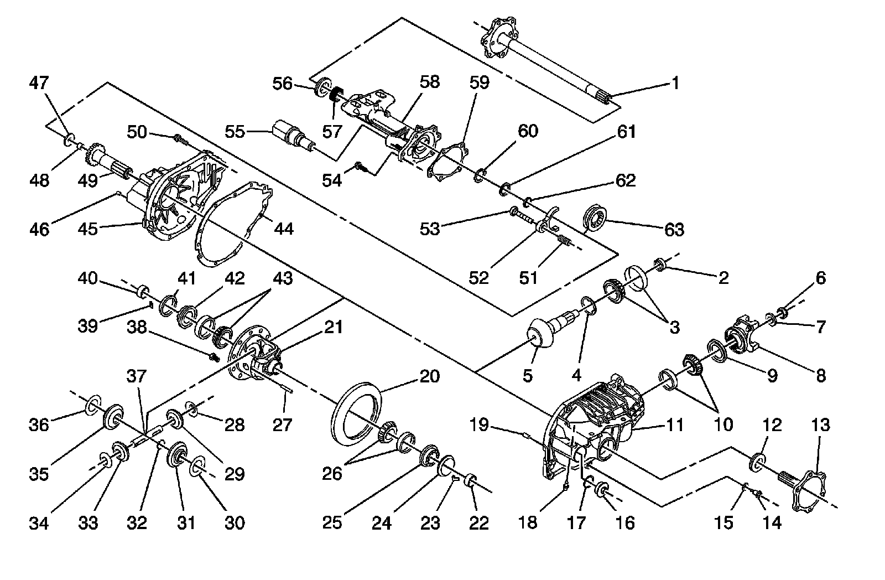

Front Drive Axle Disassembled Views (8.25 Inch (S4WD))
Front Drive Axle Disassembled Views (8.25 Inch (S4WD))
Front Drive Axle:

1 - Output Shaft
2 - Pinion Spacer
3 - Pinion Hear Bearing Assembly
4 - Pinion Shim
5 - Drive Pinion
6 - Pinion Flange Nut
7 - Pinion Flange Washer
8 - Pinion Flange Assembly
9 - Pinion Seal Assembly
10 - Pinion Tail Bearing Assembly
11 - Carrier Housing
12 - Output Seal Assembly
13 - Output Shaft
14 - Drain Plug
15 - Drain Plug Washer
16 - Fill Plug
17 - Fill Plug O-ring
18 - Vent Connector
19 - Carrier Dowel Pin
20 - Ring Gear
21 - Differential Case
22 - Output Shaft Bearing Assembly
23 - Differential Case Adjuster T-Lock
24 - Differential Case Adjuster Sleeve
25 - Differential Case Adjuster
26 - Differential Case Bearing Assembly
27 - Differential Pinion Cross Pin Lock
28 - Differential Pinion Gear Thrust Washer
29 - Differential Pinion Gear
30 - Differential Side Gear Thrust Washer
31 - Differential Side Gear
32 - Output Shaft Snap Ring
33 - Differential Pinion Gear
34 - Differential Pinion Gear Thrust Washer
35 - Differential Side Gear
36 - Differential Side Gear Thrust Washer
37 - Differential Pinion Cross Pin
38 - Ring Gear Bolt
39 - Differential Case Adjuster T-Lock
40 - Output Shaft Bearing Assembly
41 - Differential Case Adjuster Sleeve
42 - Differential Case Adjuster
43 - Differential Case Bearing Assembly
44 - Carrier Gasket Assembly
45 - Cover Housing
46 - Tube Dowel Pin
47 - Output Shaft Shim
48 - Inner Output Shaft Bearing Assembly
49 - Inner Output Shaft
50 - Carrier Bolt
51 - Shiftier Fork Spring
52 - Shiftier Fork
53 - Shiftier Fork Rod
54 - Tube Bolt
55 - Actuator
56 - Output Shaft Seal Assembly
57 - Output Shaft Bearing
58 - Tube
59 - Tube Gasket Assembly
60 - Axle Shaft Tabbed Thrust Washer
61 - Axle Shaft Thrust Washer
62 - Axle Shaft Snap Ring
63 - Shiftier Connector Gear